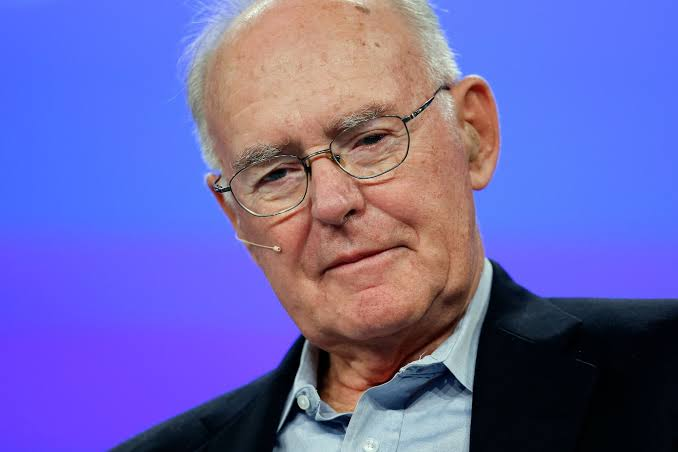

1929-2023
Gordon Moore, in full Gordon E. Moore, (born January 3, 1929, San Francisco, California, U.S.—died March 24, 2023, Waimea, Hawaii), American engineer and cofounder, with Robert Noyce, of Intel Corporation.
Moore was particularly excited about the potential of the transistor, a recent invention awaiting the development of practical manufacturing techniques. In 1956 Moore returned to California to work at Shockley Semiconductor Laboratory, which William Shockley, one of the Nobel Prize-winning inventors of the transistor, had just opened in Palo Alto. The new laboratory was researching manufacturing methods for silicon-based transistors, but after a hectic year-and-a-half under Shockley’s management—capped by an appeal by Moore and others that the company hire a professional manager—Moore and seven colleagues resigned and joined with Fairchild Camera and Instrument Corporation to form a new company, Fairchild Semiconductor Corporation, in Santa Clara, California. In 1957 Fairchild was looking to enter the transistor business, and the “traitorous eight”—as Shockley labeled the defectors—presented themselves as a prepackaged solution. With Fairchild’s financing and investments from each of the founding members, the new company soon emerged as a major transistor manufacturer. Moore became director of the new company’s research and development in 1959, after cofounder Noyce (coinventor of the integrated circuit) was elevated from that post to general manager. During his years at Fairchild, it became clear to Moore that, no matter how much science went into conceiving of silicon wafers, there would always be an artlike skill associated with their production. When Moore and Noyce left Fairchild in 1968 to establish Intel Corporation (also located in Santa Clara), they decided to merge theory and practice by forcing research scientists and engineers to work directly on the production of chips, especially the magnetic oxide semiconductor memory chips that became Intel’s first big commercial success. Moore was vice president (1968–75), president (1975–79), chief executive officer (1975–87), and chairman of the board of directors (1979–97) of Intel. From 1993 to 2000 he served as chairman of the board of trustees of Caltech. Moore was awarded the National Medal of Technology in 1990.